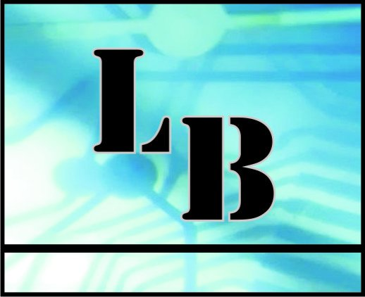

Soporte técnico
Diagnóstico, mantenimiento, reparaciones, migraciones y asistencia remota o presencial para usuarios y empresas.
- Windows y notebooks
- Puestos de trabajo
- Soporte continuo

Soluciones informáticas · Mar del Plata
Ayudamos a empresas, profesionales y hogares de Mar del Plata con soporte técnico, redes estables, hosting y automatizaciones pensadas para el uso diario.
UNA SOLA REFERENCIA TECNOLÓGICA
Analizamos qué necesitás, resolvemos lo urgente y dejamos una base preparada para crecer.
Diagnóstico, mantenimiento, reparaciones, migraciones y asistencia remota o presencial para usuarios y empresas.
Conectividad confiable para oficinas, edificios y hogares con diseño, instalación y administración profesional.
Administración centralizada de servicios web, DNS y correo corporativo con acompañamiento técnico.
Procesos más simples mediante scripts, Power Automate y herramientas que reducen tareas repetitivas.
Decisiones tecnológicas con criterio: compras, renovaciones, seguridad, respaldo y planificación.
ECOSISTEMA LEOBATTO
CÓMO TRABAJAMOS
No vendemos herramientas por catálogo. Relevamos el contexto, proponemos una solución comprensible y acompañamos la implementación.
Escuchamos la necesidad y revisamos el entorno actual.
Definimos alcance, prioridades y una implementación por etapas.
Configuramos, migramos o instalamos con el menor impacto posible.
Documentamos, capacitamos y seguimos disponibles.
HABLEMOS
Podés escribir por WhatsApp o email. Si todavía no sabés cuál es la solución, empezamos por entender el problema.